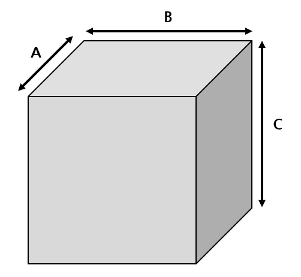

안전포장 서비스
해외배송 중 발생할 수 있는 파손 위험을 최소화하기 위해 물품을 박스와 에어캡으로 꼼꼼히 재포장해 드립니다.
본 서비스는 무료로 제공되며, 고객님의 소중한 물품을 더욱 안전하게 보호합니다.
(*단, 안전포장을 했더라도 운송 중 파손 시 처리는 운송사 규정에 따릅니다.)
해외배송 중 발생할 수 있는 파손 위험을 최소화하기 위해 물품을 박스와 에어캡으로 꼼꼼히 재포장해 드립니다.
본 서비스는 무료로 제공되며, 고객님의 소중한 물품을 더욱 안전하게 보호합니다.
(*단, 안전포장을 했더라도 운송 중 파손 시 처리는 운송사 규정에 따릅니다.)
여러 쇼핑몰에서 구매한 물품을 하나의 상자로 합쳐 포장하여 해외배송비를 절약할 수 있는 서비스를 제공합니다.
본 서비스는 무료로 제공되며, 고객님의 비용 부담을 줄이는 데 도움을 드립니다.
새닢과 함께 더욱 경제적인 해외 배송을 경험하세요!
배송 요금은 무게중량과 부피중량 중 더 높은 값을 기준으로 청구됩니다.
무게중량: 저울에 측정된 실제 무게
부피중량: 박스의 가로 × 세로 × 높이 ÷ 6000
주의사항:
박스가 부풀어오른 부분까지 길이에 포함되므로,
합포장 후에는 예상보다 높은 부피중량이 측정될 수 있습니다. 이 점 양해 부탁드립니다.
정확한 측정을 위해 최적의 포장 상태로 발송해드립니다. 😊
1. 배송비 외에 부가 서비스 비용이 발생 할 수 있습니다. (집퍼스 부가서비스 참조)
2. 해외 배송요금은 관세, 부가세 등 수입세 및 특별 처리비용이 포함되지 않은 금액이고,
수입통관 중 각종 비용 발생시, 해당 비용은 고객님께서 사전에 절차 완료하셔야 하고 절차 진행 및 국내 발송이 시작됩니다.
3. 해외 각 센터에서 한국으로의 국제배송 시 배송요금의 계산 기준은 최소 0.5kg이며, 소수점 이하는 0.5단위로 절상합니다.
(예: 0.51~1kg → 1kg, 1.01~1.5kg → 1.5kg)
※ 소수점 이하의 소수 무게조차로 인한 재포장 및 무게조정은 대응이 불가합니다.
4. 해외 센터에 따라 창고별 부피무게 총 산출된 무게가 큰 금액을 적용하며, 각 해외센터별 부피무게는 다음 기준에 따라 산출됩니다.
| 해외센터 | 배송비 측정 기준 | ||
|---|---|---|---|
| 미국 | 오래곤, 뉴저지 | 중량과 부피무게 중 큰 무게 적용 | |
| 유럽 | 영국, 독일, 스페인, 프랑스 | 중량과 부피무게 중 큰 무게 적용 | |
| 아시아 | 일본(항공)-오사카 |
부피 무게가 10kg 이상인 경우 부피무게와 실무게 중 무거운 쪽의 무게로 적용 ※ 항공기 선적가능 사이즈: 최소변 길이 120cm 이하 / 세 변 길이 합 160cm 이하/무게 제한 없음 ※ 부피 무게가 10kg 이상인 경우 부피무게와 실무게 중 무거운 쪽의 무게로 적용 ※ 신발박스의 경우 부피무게가 2kg 이상이면 박스당 추가요금 300엔 |
|
| 일본(항공)-도쿄 |
전상품 실무게 적용 ※ 포장 후 최종무게가 패키지당 30kg 초과하는 경우 선적불가. 멀티박스로만 선적 진행 가능 ※ 포장된 최종 패키지의 세 변 길이 합한 값 200cm 이하인 선적 가능 |
||
| 일본(항공)-후쿠오카 | 전상품 실무게 적용 | ||
| 일본(항공)-도쿄 |
전상품 실무게 적용 ※ 세변길이 총합 240cm 이하 / 초장변 길이 최대 160cm까지 대응가능. ※ 포장 후 최종무게가 패키지당 최대 40kg 초과하는 경우 선적불가. ※ 멀티박스 불가 |
||
| 중국(선박) | 전상품 실무게 적용 | ||
| 중국(항공) | 전상품 실무게 적용 | ||
| 호주 | 중량과 부피무게 중 큰 무게 적용 | ||
|  |
미국(오레곤,뉴저지) 부피무게(kg) = A×B×C(inch) / 366 |
독일, 영국, 스페인, 프랑스, 호주 부피무게(kg) = A×B×C(cm) / 6,000 |
|
일본(항공)-오사카 부피무게(kg) = A×B×C(cm) / 6,000 |
||
| 해외센터 | 대형 화물 기준 | 이관 택배사 | 추가비용 | |
|---|---|---|---|---|
| 미국 | 오레곤 |
상품포장 세변의 합이 160cm를 초과하거나 최장변의 길이가 100cm를 초과하는 경우 중량이 30kg을 초과하는 경우 |
대신택배 | 별도 실비 청구(착불) |
| 뉴저지 |
상품포장 세변의 합이 160cm를 초과하거나 최장변의 길이가 100cm를 초과하는 경우 중량이 30kg을 초과하는 경우 |
경동택배, 코파스택배 |
별도 실비 청구(착불) + 수수료 $5 |
|
| 유럽 | 영국 |
상품포장 세변의 합이 160cm를 초과하거나 최장변의 길이가 100cm를 초과하는 경우 중량이 30kg을 초과하는 경우 |
대신택배 | 별도 실비 청구(착불) |
| 독일, 프랑스 |
상품포장 세변의 합이 500cm를 초과하거나 최장변의 길이가 140cm를 초과하는 경우 중량이 30kg을 초과하는 경우 |
대신택배 | 별도 실비 청구(착불) | |
| 스페인 |
상품포장 세변의 합이 220cm를 초과하거나 최장변의 길이가 100cm를 초과하는 경우 중량이 30kg을 초과하는 경우 |
대신택배 | 별도 실비 청구(착불) | |
| 아시아 | 일본(항공)-오사카 |
상품포장 세변의 합이 160cm를 초과하거나 최장변의 길이가 100cm를 초과하는 경우 중량이 30kg을 초과하는 경우 ※ 3변의 합이 140cm 초과 → 건당 1200엔 발생 3변의 합이 140cm 이하더라도 한변의 최대길이가 80cm~120cm인 경우 → 대형화물 수수료 건당 850엔 → 입고검수시 무게측정 단계에서 [기타금액]에 추가되어 청구됩니다. ★ 두 경우 모두 해당된다면 추가요금은 중첩되어 적용됩니다. |
대신택배, 경동택배 |
별도 실비 청구(착불) |
| 일본(항공)-도쿄 |
상품포장 세변의 합이 160cm를 초과하거나 최장변의 길이가 100cm를 초과하는 경우 중량이 25kg을 초과하는 경우 ※ 포장후 최종무게가 패키지 당 30kg 초과되는 경우 선적불가. 멀티박스만 선적처리 가능됩니다. ※ 포장된 최종 패키지의 세변합이 총합 200cm 이하만 선적 가능 (예) 1개의 신청서에 1개의 상품, 35kg인 경우 → 단일 박스 30kg 초과되어 선적불가 (예) 1개의 신청서에 2개의 상품이 있고, 각 상품이 20kg 인 경우 → 단일 박스로는 선적불가 / 2개를 멀티박스로 포장 (20kg, 20kg) 선적 가능 |
대신택배 | 별도 실비 청구(착불) | |
| 일본(선박)-후쿠오카 |
상품포장 세변의 합이 200cm를 초과하거나 최장변의 길이가 100cm를 초과하는 경우 중량이 30kg을 초과하는 경우 육면체의 박스형태로 포장되지 않은 화물 |
천일택배, 경동택배, 용달이 특송, (티피엠코리아) 등 |
별도 실비 청구(착불) | |
| 일본(선박)-오사카 |
상품포장 세변의 합이 240cm를 초과하거나 최장변의 길이가 160cm를 초과하는 경우 중량이 40kg을 초과하는 경우 ※ 25KG 이하이며 최장변 100cm 초과 → 500엔 25KG 초과이며 최장변 100cm 초과 → 1,500엔 3변합 160cm 이하이며 25kg 초과 → 1,000엔 3변합 160cm 초과이며 25kg 이하 → 1,000엔 3변합 160cm 초과이며 25kg 초과 → 1,500엔 (중첩되는 경우, 큰 쪽의 금액으로 적용 됩니다) |
대신택배, 경동택배 |
별도 실비 청구(착불) | |
| 중국(선박) |
상품포장 세변의 합이 160cm를 초과하거나 최장변의 길이가 100cm를 초과하는 경우 중량이 20kg을 초과하는 경우 육면체의 박스형태로 포장되지 않은 화물 배송기사가 혼자 들기 어려운 화물 (세변의 합 150cm 이상+18kg이상) |
경동택배 |
별도 실비 청구(착불) (선불, 착불 선택 가능) |
|
| 중국(항공) |
상품포장 세변의 합이 160cm를 초과하거나 최장변의 길이가 100cm를 초과하는 경우 중량이 15kg을 초과하는 경우 |
경동택배 | 별도 실비 청구 | |
| 호주 |
상품포장 세변의 합이 160cm를 초과하거나 최장변의 길이가 100cm를 초과하는 경우 중량이 30kg을 초과하는 경우 |
대신택배 | 별도 실비 청구(착불) | |
5. 각 센터별로 현지 통화 혹은 원화로 결제금액이 책정됩니다. 현지 통화로 적용되는 경우 새닢 자체 환율이 적용됩니다.
※ 환율 변동으로 인하여 결제 시기에 따라 금액이 다소 변동될 수 있습니다.